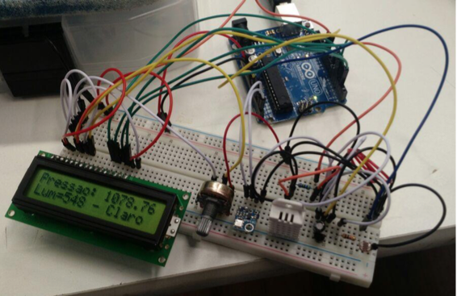
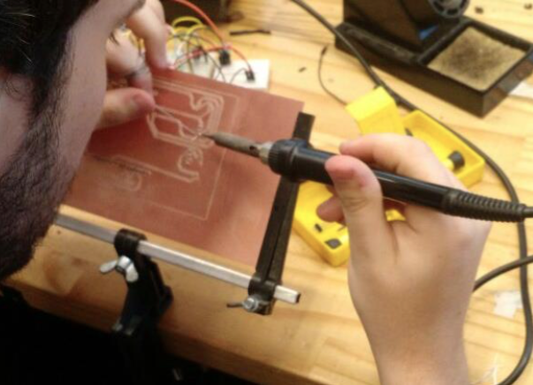
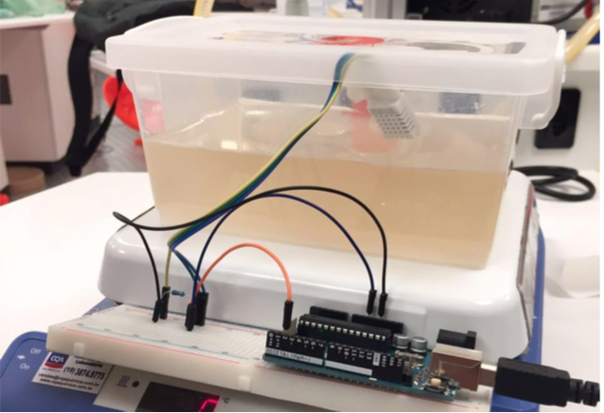

Capotruz
- O projeto envolveu software? Não, nesse projeto o trabalho manual prevaleceu. A única vez que algum tipo de software foi utilizado foi para atualizar a wiki do projeto ou para tirar dúvidas pontuais. O FabLab , laboratório da faculdade, dispunha de alguns materiais a serem utilizados como colas e serras.
- O projeto envolveu fabricação? Sim, como dito anteriormente, a fabricação tomou conta da maior parte do projeto. Por se usarem muitas peças, colas e serras foram definitivamente as ferramentas mais utilizadas. Sprays também foram utilizados para o design do brinquedo.
- O projeto envolveu eletrônica? Não, não houve envolvimento com eletrônica. O projeto consistiu em uma arma de gás comprimido que simulava um avestruz que cospia ovos de isopor. Dessa forma, a arma era composta de canos PVC, uma válvula, ovos, pintura e uma bomba de bicicleta. Com isso não houve parte eletrônica do trabalho, apenas materiais.
- O projeto envolveu design centrado no usuário? Com certeza, já que o público alvo já era sabido ao começo do projeto. O grupo fez entrevistas com crianças na faixa de 7 a 9 anos de idade para saber sua opinião à respeito do que seria um brinquedo legal. Depois de colhidos os depoimentos, a ideia da arma parecia cada vez mais interessante e o grupo decidiu por concretizá-la.
- O projeto envolveu escrita técnica e científica? Não, já que o a única forma de documentação era a página da wiki do projeto em que a escrita não possuía rigor técnico e sim um texto informativo sobre do que se tratava o projeto.
- Qual foi o curso em que o projeto foi feito? Natureza do Design.
- Qual foi a data em que o projeto foi feito? Começo de abril até a metade de junho.
- Qual foi o período em que o projeto foi feito? O projeto foi feito ao longo do primeiro semestre da faculdade.
- Qual foi a duração do projeto? Cerca de 2 meses.
- Qual foi o papel do aluno no projeto? Fui responsável pela junção das peças da arma de ar comprimido e a pintura do exterior.
Nome: Capotruz
Curso: Natureza do Design
Periodo: Primeiro
Design: Sim
Descrição:Descrição: manufatura de um brinquedo infantil que tenha como público alvo crianças de 7 a 9 anos de idade. O brinquedo era composto de canos pvc, uma válvula, tinta spray e ovos de isopor. Consiste em uma arma de gás comprimido que era preenchida com ar advindo de uma bomba de bicicleta. O projeto se iniciou em abril e se estendeu ate a metade de junho. Nesse projeto tive o papel da junção dos canos pvc e a pintura do brinquedo.


